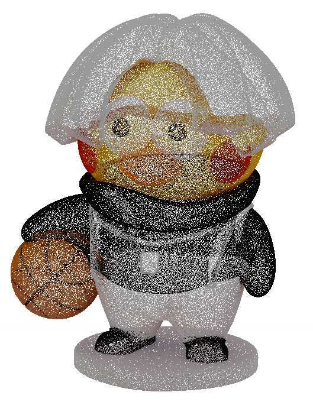
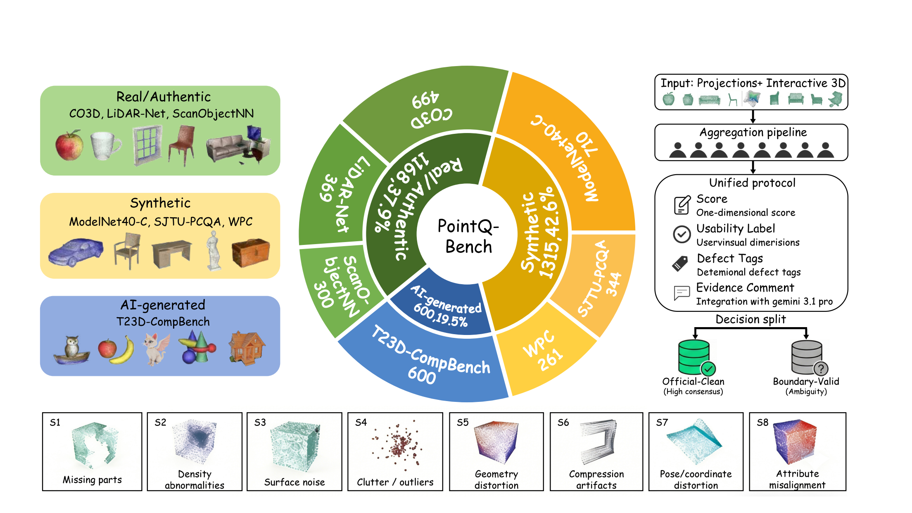

YES / NO
Spot the anomaly.
Is there a noticeable quality degradation?
Anomaly sensing Accuracy
ACM MULTIMEDIA 2026 / OPEN RESEARCH
PointQ-Bench: Benchmarking Diagnostic and
Interpretable Point Cloud Quality Assessment
A pretty point cloud can hide an ugly problem. We ask models to spot it, name it, judge its usability, and explain their evidence.
Four tasks. Eight experts. One very honest check-up.

Rendered point cloud shown in the paper's quality-assessment example.
Images extracted from the paper illustration. Reference mesh is not an evaluation input; this is not a live model prediction. See the paper.
01 / THE BENCHMARK
From real-world scans to generated shapes, quality is more than how many points you have.
Each selected sample receives MOS, a usability label, defect tags, and expert-grounded comments. AI-summarized reference text is documented separately from human annotations.

02 / THE CHECK-UP
Three perception tasks, followed by one evidence-grounded quality report. No hiding behind a single number.
YES / NO
Is there a noticeable quality degradation?
WHAT
Which issue types are present in the point cloud?
HOW
Is the point cloud good, usable, or bad?
WHY / QUALITY REPORT
Explain the visible defects and support a final judgment.
03 / THE DIAGNOSTIC STANDARD
A convincing report is not necessarily a correct one. SSFRQ-5D separates coverage, specificity, grounding, reasoning, and the final quality decision.
Five dimensions. Three ordinal scores.
Sum reported out of
10.
Does the report include an overview, defects, and a final judgment?
Does it describe concrete geometric or attribute evidence, rather than generic claims?
Does it agree with the reference evidence without inventing defects?
Do the cited defects logically support the usability conclusion?
How close is the final decision to the reference usability level?
04 / TAKE THE BENCHMARK HOME
The point clouds and frozen six-view projections are available now. Checksums and a sample manifest keep your local copy accountable.
3,083 original benchmark inputs across seven sources.
4 byte parts: 3 GiB + 3 GiB + 3 GiB + 282 MiB.
Merge first,
then unzip. This is not a four-dataset split.
18,498 frozen PNG projections. Six views per point cloud.
One ZIP with dataset-relative image folders.
Use the frozen
inputs to match the evaluated view setting.
Download all four .zip.001 to
.zip.004 parts, the parts checksum file, and
merge_pointcloud_parts.py into the same directory.
Run:
python merge_pointcloud_parts.py
The script verifies each part and the reconstructed archive
before completing. Unzip
PointQ-Bench_pointclouds_v1.0.zip afterwards. The
files in the share include full instructions and both checksum
lists.
本次点云包需要先合并四个分卷，再解压；图片包可直接解压。原始点云文件内容未改动。
@inproceedings{wang2026pointqbench,
title = {PointQ-Bench: Benchmarking Diagnostic
and Interpretable Point Cloud Quality Assessment},
author = {Wang, Duanchu and Li, Cheng and
Yang, Junjie and Huang, Jing and Cheng, Zihang
and Gao, Zhi and Zhu, Bohong and Wang, Di},
booktitle = {Proceedings of the 34th ACM
International Conference on Multimedia},
year = {2026},
doi = {10.1145/3767308.3836267}
}
ACM Multimedia 2026 · Rio de Janeiro, Brazil
DOI as
printed in the camera-ready paper.